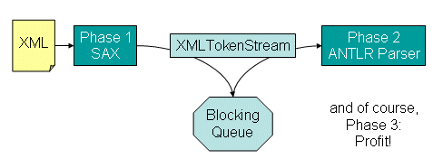

ANTXR: Easy XML Parsing, based on the ANTLR parser generator
NOTE: I haven't updated this tool in many years... I'm keeping it here for historical purposes, and someday might play around with it again... It was very useful in some projects at a previous job...
ANTXR = ANother Tool for Xml Recognition
Pronounce it "Ant-zer"...
The name is a slight modification to ANTLR (ANother Tool for Language Recognition), because ANTXR is based heavily on ANTLR.
Source Code
The source code is available at https://github.com/javadude/javadude
Look for sub-directories * com.javadude.antxr.eclipse.core * com.javadude.antxr.eclipse.ui * com.javadude.antxr.eclipse.feature * com.javadude.antxr
I haven't built this tool in quite a while, so I'm not sure how likely it is to build...
License
ANTXR is distributed under the Eclipse Public License (EPL). You can read about the concepts in plain English at Eclipse Public License (EPL) Frequently Asked Questions. This is the same license that Eclipse is currently distributed under, and you can basically use the tool for whatever purpose you would like, commercial or non-commercial, without license fee.
Download
There are three main download types:
- Eclipse: (UPDATE SITE NO LONGER EXISTS)
- Non-eclipse: The basic ANTXR distribution can be obtained via antxr.zip.
- Use the build.xml under ant-build to build antxr.
- To use in your own ant scripts, look at the antxr macro defined in this build.xml.
- Samples: antxr-samples.zip
If you're interested in why ANTXR exists and how it got to where it is, read on. If you're only interested in some examples and how you write an ANTXR parser, feel free to jump to Writing Your XML Parser.
Acknowledgements
ANTXR is based on the public domain ANTLR Parser Generator by Terence Parr. See http://antlr.org for details on ANTLR. Many thanks to Terence Parr and all of the other ANTLR contributors (including me ;) for their work on ANTLR that has allowed me to create ANTXR.
The ANTXR Eclipse plugin is based on the ANTLR-Eclipse plugin at http://antlreclipse.sourceforge.net by Torsten Juergeleit. Many thanks to Torsten and the others who have contributed to the plugin.
Contents
History
XML Parsing can be quite a pain the butt.
Current XML parsing mechanisms have several problems, from lack of context information, to using too much memory, to requiring unwieldy if-then-else constructs or difficult to maintain reflective modeling.
Representing your XML parsing rules as an ANTXR grammar can solve many of these problems, producing an effective, maintainable XML parser.
Introduction and motivation
_Note: What follows is a bunch of history, motivation, and implementation strategies. If you simply want to jump in and write an XML parser of your own, jump down to Writing Your XML Parser._
There are several common mechanisms for XML parsing. Let's concentrate on the "big two": SAX and DOM. And let's not treat them too nicely. They're nasty to use...
DOM
A DOM parser rips through an XML instance document and creates a lovely little tree of evil DOM nodes. The larger your instance document, the more memory this takes, so it doesn't scale well at all. (Damn... I used a buzzword... sorry!)
Anyway, memory is a huge issue here, and is the main reason that people report for not using DOM. But there is another significant issue: You can accidentally ignore a subtree. Think about this. You make a change to your XML schema, and change part of your DOM tree walking parser, but forget to add in exploration for part of it. Everything proceeds without a clue that you forgot that part. This can cause errors that are pretty tricky to diagnose.
And don't get me started on the DOM API. Blech! Unfortunately, the DOM API that we all use has been handed down from generation to generation from someone (Al Gore claims it was he), who was either intoxicated or stoned while working on browser HTML parsing.
SAX
A nice little event-based mechanism that tells you when it sees tags and content. It does the dirty work of validation and scanning for you, but you're left to pick up the pieces as it throws you notifications. You write a handler with a single method that receives notification for any start tag. If you want to know the context in which a tag appears, it's up to you to track it. While it's pretty memory-efficient by itself, you still need to track extra information to know to which object <name> belongs.
And then comes the handler...
public void startElement(String uri, String localName,
String qName, Attributes attributes) throws SAXException {
if ("tagA".equals(localName)) {...}
else if ("tagB".equals(localName)) {...}
else if ("tagC".equals(localName)) {...}
else if ("tagD".equals(localName)) {...}
else if ("tagE".equals(localName)) {...}
...
else {/* error */}
}
Jinkies! This is an accident just waiting to happen. It's nearly impossible to "see" the XML structure in there. And if you don't add the "anything else is an error" block in there, you fall into one of the same problems as DOM: you can easily forget to handle a tag.
A variation on this handler can use reflection to call other methods or plug-in tag handlers. I'll give this an "A" for effort, but after maintaining a few parsers like these, my head explodes at the thought.
Digester
When I first saw Jakarta Digester, I was pretty impressed. Very cool little XML handler. It solves a lot of problems, including context. I was in love. But I like to think in terms of a stack when it's appropriate...
I quickly saw confusion on the faces on others when faced with a digester rule-set. While I eat and breath stacks (I'm a compiler guy at heart), this is not the case with everyone, and digester can be incredibly confusing for many to grok. But it's a step in the right direction:
- Declaratively specify how to process the XML. Almost like showing what the XML "looks like".
- Define what to do when you match certain patterns, including context.
- Keep track of the context appropriately.
But I think its implementation causes more confusion to new users than it's worth, and it can require a bit of work to add in those "special cases" that we all find lurking in our wonderful XML documents.
Keeping in synch with the XML schema
And here's the biggest problem, and it applies to every XML parsing technique that's commonly used. It's often very difficult to update your parser when the XML schema changes. Think about what the code looks like in a SAX, DOM, or Digester based parser. It looks nothing like the XML schema. If we could represent our parser in a form that's parallel to our schema, life would be much simpler when it comes to updating a parser to match a schema change.
Enter ANTLR-Based XML Parsing
I've been thinking about parsing XML with ANTLR for quite some time, and when some folks at my then employer, FGM, Inc, were planning an XML import refactoring, I suggested that we take a look at ANTLR.
For starters, I looked at XPA, which is some pretty nice XML parser support for ANTLR. This came pretty darn close to what I envisioned as an ideal XML parser, with a few exceptions:
- It requires somewhat verbose specification. You need to specify the start and end tags explicitly, making it easy to "typo" the matching end tag. You also had to jump through a few hoops and casts to access the attributes for a tag.
- It has no support for namespaces. This is not an issue if you're not using namespaces, but if you do use namespaces, it's a non-starter.
As a simple example of a grammar in XPA, I could write
// XPA example grammar rules
note {String to, from, subject, body;}
: noteStart:"<note>"
{
Attributes attributes =
((XMLStartToken) noteStart).getAttributes();
to = attributes.getValue("to");
from = attributes.getValue("from");
}
subject=subjectTag
body=bodyTag
"</note>"
{
// you can do whatever you want here with
// to, from, subject and body
}
;
subjectTag returns [String subject=null]
: "<subject>"
value:PCDATA {subject=value.getText();}
"</subject>"
;
bodyTag returns [String body=null]
: "<body>"
value:PCDATA {body=value.getText();}
"</body>"
;
The first thing to notice here is that we have context. Rules are called from each other, and parameters can be passed and/or values returned. We could even have separate rules for "
The above parser requires explicit specification of the start and end tags, and a slightly awkward attribute access mechanism.
I wanted to make things easier for my coworkers, so I downloaded the latest ANTLR source and started hacking...
Poof! We Have ANTLR Native XML Support!
The first thing I wanted was easy optional validation. It must be fast, and robust. It seemed to me that using an existing SAX parser was the best solution for this, as they're being pounded on by thousands of developers, so they'd be pretty robust, and they're pretty quick (some more so than others).
So we start with a SAX front-end. You choose the one you want to use and configure it turn on validation, namespace support, whatever.
Next comes XMLTokenStream, a new class in the ANTLR distribution that acts as a hander for a SAX parser, and a source for an ANTLR parser. Because SAX is a "push" API, and ANTLR is a "pull" API, we need to form a "meet-in-the-middle" strategy. XMLTokenStream does this by supplying a blocking queue. SAX parses the XML, notifying a handler in the XMLTokenStream, and the handler creates ANTLR tokens, enqueueing them on the blocking queue. XMLTokenStream provides a nextToken() method that your ANTLR parser will call to retrieve tokens. This nextToken() method dequeues a token from the blocking queue (waiting if there isn't one available), and returns it to the ANTLR parser. Figure 1 shows this processing.

You can also pass a DTDHandler or EntityResolver to the XMLTokenStream, if needed, and its default handler will delegate to them.
At this point, we have support for validation (or not), tokenization based on the SAX parse, and feeding those tokens to a hungry ANTLR parser.
But what do those tokens look like?
Start Tokens
Each time the SAX parser notifies XMLTokenStream that it has seen a start tag, a new XMLToken is created with a type matching the tag name. (This type is defined by your parser.)
End Tokens
Assuming that we can validate, at least to ensure well-formed-ness, we only need a single type of end token. We call this type of token XML_END_TAG. Anytime the SAX parser notifies XMLTokenStream that an end tag has been seen, a new CommonToken is created of type XML_END_TAG.
Character Data
Character data is collected and returned as a CommonToken of type PCDATA.
XMLToken is an extension of ANTLR's CommonToken, providing access to a tag's attribute data. The SAX attributes object is placed into this token for easy access.
Call me a dunce...
At this point I should note that silly me didn't look at the source for XPA... I wanted to do a "clean room" implementation. After looking at the XPA code while writing this document, It turns out that XPA handles its processing in almost exactly the same manner as I did. It's really spooky how similar the code I wrote for the XMLTokenStream and the blocking queue is to the XPA source code. However, looking back on this, though I effectively wasted a day working on it, it helps validate that this approach is good, as two separate (and brilliant, mind you ;) ) developers came up with the same approach for parsing. My XMLTokenStream is a bit more flexible, in that you can pass your own SAX handler instance to it, allowing you to configure it for whatever validation you would like.
Hacking ANTLR into submission
Next I started modifying ANTLR. I wanted to make XML processing easier. To me, this meant two things:
- Don't require the grammar writer to have to type in the start and end tags.
- Make attribute access easy in action code.
I wanted to be able to write something like the following:
<note>
{ String subject, body; }
: subject=<subject>
body=<body>
{doSomethingWith(@to, @from, subject, body);}
;
I quickly found out this wouldn't be possible unless I made a separate ANTLR tool for parsing XML; "<" and ">" are used for specifying element options (like which AST node to generate), which made the above cause grammar conflicts. So, I tried something a bit different:
noteTag options {xmlTag="note";}
: { String subject, body; }
subject=subjectTag
body=bodyTag
{doSomethingWith(@to, @from, subject, body);}
;
Almost the same, but a slightly different approach. Now rule references are normal by ANTLR standards, but we've simply added two things:
- The xmlTag option, which specifies that a rule represents an XML tag, and what the name of that tag is.
- The @name specification for Java action code, which is translated into the appropriate verbose nonsense to retrieve an attribute from the tag.
But where are the tag token references in the above? This was the most interesting part of this ANTLR modification. If you specified xmlTag as an option, ANTLR would generate "ghost" tokens for the start and end tags. The above rule is really the same as:
noteTag
: start:"<note>"
( // extra paren in case there were some alternatives...
{ String subject, body, to=/*code to get "to"*/, from=/*code to get "from" */; }
subject=subjectTag
body=bodyTag
{doSomethingWith(to, from, subject, body);}
) // extra paren in case there were some alternatives...
XML_END_TAG
;
These "ghost tokens" make the grammar specification much simpler, and the @name attribute references can hold off carpal tunnel syndrome for at least a few more hours...
The next trick was to allow easy namespace usage. I wanted to be able to use
xmlTag="foo:someTag"
@foo:someAttribute
in the grammar, where "foo" could be a grammar-writer-defined prefix for some namespace, and map that reference to the real namespace used in the XML. This would allow different XML document instances to use different prefixes. To do this, I added an xmlNamespaceMapping option, which can be specified at the grammar level, mapping a prefix to a namespace URI:
class NoteParser extends Parser;
options {
xmlMode=true;
xmlNamespaceMapping="$DEFAULT=http://www.w3schools.com";
xmlNamespaceMapping="xsi=http://www.w3.org/2001/XMLSchema-instance";
}
The "xmlMode" option simply sets up a few imports and a place to hold namespace mappings. The xmlNamespaceMapping option defines a prefix->URI mapping. Note that I used "$DEFAULT" to represent the default namespace. I did this because
xmlNamespaceMapping="=http://www.w3schools.com";
looked more like an error than an intentional default namespace specification. If you don't like this, ANTLR is open-source, so feel free to change it....
With these few constructs added to ANTLR, my fellow FGMers started to write a parser. I gave them very little overview. Instead, I gave them a simple sample parser and my ANTLR tutorial (they were both new to ANTLR). They asked a few questions, but after a few days they were very comfortable with writing XML grammars in ANTLR. This gave me the warm fuzzies that I achieved my goals...
Forking from ANTLR
While the above parsers worked well, I still didn't like the syntax. I really wanted something that felt more like XML, so I decided to fork from ANTLR to create ANTXR (pronounced "ant-zer"). ANTXR has most of the syntax I really want. (I removed the above support from ANTLR itself.)
The following is a real (though not terribly useful) ANTXR grammar, demonstrating most of the features of ANTXR:
01 header {
02 package com.javadude.antxr.sample;
03 import java.util.Hashtable;
04 import java.io.PrintWriter;
05 import java.io.FileWriter;
06 }
07
08 class NoteParser1 extends Parser;
09
10 options {
11 xmlns="http://www.w3schools.com";
12 xmlns:xsi="http://www.w3.org/2001/XMLSchema-instance";
13 }
14
15 document returns [String text=""]
16 : text=<note> EOF
17 ;
18
19 <note> returns [String text=""]
20 : {
21 String t=null, f=null, h=null, b=null;
22 text += "xsi:schemaLocation = " +
23 @xsi:schemaLocation + "\n";
24 }
25 t=<to>
26 f=<from>
27 h=<heading>
28 b=<body>
29 {
30 text += "Note id: " + @id + "\n";
31 text += "To: " + t + "\n";
32 text += "From: " + f + "\n";
33 text += "Subject: " + h + "\n";
34 text += "----\n";
35 text += b;
36 }
37 ;
38
39
40 <to> returns [String value=""]
41 : {value = @name;}
42 ;
43
44 <from> returns [String value=""]
45 : {value = @name;}
46 ;
47
48 <heading> returns [String value=""]
49 : :PCDATA {value = pcData.getText();}
50 ;
51
52 <body> returns [String value=""]
53 : pcData:PCDATA {value = pcData.getText();}
54 ;
Let's walk through some of this example. Most of it is normal ANTLR syntax, with the following modifications:
- lines 11-12: A much more natural namespace specification. (Well, XML namespace specifications are anything but natural, but this is as natural as XML itself...).
- line 16: XML rules are referenced using
syntax. Behind the scenes this becomes a call to __xml_ruleName(). - line 19: Declaring the
rule does the following: - Changes the method name to __xml_note()
- Automatically adds a reference to the
token at the beginning of the rule - Automatically adds a reference to the XML_END_TAG token at the end of the rule
- Assigns a variable to refer to the
tag so attribute references can see it.
- lines 23, 30, 41, 45: Attributes are referenced using @attributeName syntax. Attributes are retrieved from the start tag corresponding to the rule in which they appear. For example, the @name referred to in the
rule will retrieve the name attribute of the tag that was matched in the XML input. - lines 49, 53: PCDATA is a pre-defined token that represents parsed character data inside a tag. Its position corresponds to which PCDATA chunk you want to read from the tag. (Other tags can appear between PCDATA tags.)
Writing Your XML Parser
So now we come to the "how to I write an XML parser using ANTLR" stuff; the stuff that you actually care about and are now wondering why you just read all of the above stuff that doesn't get you any closer to having a working XML parser...
Scanning XML
The first thing you need to know about writing an ANTXR parser is how the XML file is read and tokenized. There are two basic approaches here:
- SAX-Based: A SAX parser (such as Xerces or Crimson) reads the XML file, and a simple SAX handler creates ANTXR tokens for each tag and PCDATA found. These tokens are pushed into a queue where they wait to be pulled by an ANTXR-generated parser. This is a push-pull parser, requiring two threads to perform the overall parsing and a synchronization point (the blocking queue).
- XMLPULL-Based: An XMLPULL parser (such as kxml or StAX) waits to scan the XML file until the ANTXR-generated parser asks for a token. When a token is asked for, the XMLPULL parser scans for the next tag or PCDATA in the XML file, creates an ANTXR token and returns it. This is a pull parser, requiring only one thread to perform the overall parse.
Each of these has benefits and drawbacks.
The most obvious difference is performance. The XMLPULL-based parser generally performs slightly better (assuming a reasonable XMLPULL implementation is used for the scanner.) This is due to thread synchronization.
Executable size is another difference, and this can depend on the runtime environment. The Java Runtime Environment includes the Crimson XML parser (SAX-based), which means you don't need any jars other than the runtime jar and the ANTXR jar for your parser. However, some XMLPULL parsers like kxml are very small (only a few kilobytes) so this isn't much of an issue.
Validation is another difference. All of the SAX and XMLPULL based parsers will at least ensure the XML being parsed is well-formed. This allows ANTXR to be a little more efficient with regard to end tags, as all end tags can be represented by a common token type. However, if you want more than well-formedness checking, you need to examine which parser you want to use. For example:
- Xerces SAX supports DTD and schema-based validation
- Crimson SAX (present in the JRE) supports only DTD-based validation
- kxml XMLPULL supports only DTD-based validation
I strongly recommend that you do any desired validation with the SAX or XMLPULL validator, and keep your ANTXR parser simple, just recognizing and performing actions on the XML file.
A skeletal XML grammar
Here's a simple skeleton for an XML parser written in ANTXR.
header {
package your.packagename;
// any necessary import statements
}
class YourParserName extends Parser;
options {
xmlns="http://your.default.namespace/uri";
xmlns:somePrefix="http://some.namespace/uri";
}
document
: <sampleRootTag> EOF
;
<sampleRootTag>
: <sampleTagWithAttributes>
| <sampleTagWithPCDATA>
;
<sampleTagWithAttributes>
: { System.out.println(@name); }
;
<sampleTagWithPCDATA>
: pcData:PCDATA { System.out.println(pcData.getText()); }
;
This skeleton shows all you need to know to write a simple XML parser in ANTLR.
The Ground Rules
First, we should establish some ground rules:
- Each tag in your XML file is represented by one rule in the grammar. You can have additional rules to help organize things, but in order to take advantage of the shortcuts, you must define a top-level ANTXR rule for each tag in your grammar file.
- We assume that if you want to validate the XML, you're using the validation options of the SAX or XMLPULL parser you're using. You could do all the validation yourself in the grammar file, but that would be much more difficult than specifying an XML schema or DTD for the validation.
- We assume you're familiar with XML, so when we say things like "namespace", you know what it means.
Ok, fair enough. Let's create a real XML parser in ANTXR.
A Simple XML Parser
First, let's look at a chunk of XML that we can parse:
<?xml version="1.0"?>
<people>
<person ssn="111-11-1111">
<firstName>Terence</firstName>
<lastName>Parr</lastName>
</person>
<person ssn="222-22-2222">
<firstName>Scott</firstName>
<lastName>Stanchfield</lastName>
</person>
<person ssn="333-33-3333">
<firstName>James</firstName>
<lastName>Stewart</lastName>
</person>
</people>
This file defines a set of people we might want to deal with. They're all nice folks, albeit one of them is unfortunately dead, but we like them and want to interact with them. (It's my tutorial, so deal with it...)
Anyway, we can define some rules for this example. Note that the xml file doesn't use namespaces, so we don't need to define any in the grammar.
header {
package com.javadude.antlr.sample.xml;
}
class PeopleParser extends Parser;
document
: <people> EOF
;
<people>
: (<person>)*
;
<person>
: ( <firstName>
| <lastName>
)*
;
<firstName>
: PCDATA
;
<lastName>
: PCDATA
;
This is a complete ANTXR grammar to recognize the people example. Note that the (...)* constructs used do not enforce order or cardinality! That's the job of the XML schema or DTD. The easiest way to write these in ANTXR is to simply use ANTLR's (...)* to represent "stuff that can appear inside this tag". If you're not familiar with ANTLR syntax, please see An Antlr Tutorial (http://javadude.com/articles/antlrtut).
As a quick refresher:
(...)*
Zero or more of the enclosed symbols
(...)+
One or more of the enclosed symbols
(...)?
The enclosed symbol is optional
x | y
Either x or y can appear here
{...}
Action code, code that gets executed at this spot in the rule
To run this grammar, we need some startup code. You can choose between the following scanners (all in package com.javadude.antxr.scanner)
- XMLTokenStream: The basic SAX-based XML scanner. You create and configure a SAX parser for your XML input and feed it to the XMLTokenStream. This is highly configurable, but only really necessary if you need extra flexibility.
- XMLPullTokenStream: The basic XMLPULL-based XML scanner. You create and configure an XMLPULL parser for your XML input and feed it into the XMLPullTokenStream.
- BasicCrimsonXMLTokenStream: An easy to create Crimson-based SAX scanner. You don't need any extra jars (other than antxr.jar). This is useful if you only need to specify:
- The XML input (as a java.io.Reader)
- If you want a namespace-aware parse
- If you want DTD validation
- BasicXercesXMLTokenStream: An easy to create Xerces-based SAX scanner. You will need the Xerces.jar in your classpath to use this option. This is useful if you only need to specify:
- The XML input (as a java.io.Reader)
- If you want a namespace-aware parse
- If you want validation
- Whether than validation is DTD or XML Schema based
Here's an example:
package com.javadude.antxr.sample;
import java.io.FileReader;
import com.javadude.antxr.scanner.BasicCrimsonXMLTokenStream;
public class PeopleTest {
public static void main(String[] args) throws Exception {
// Create our scanner (using a simple SAX parser setup)
BasicCrimsonXMLTokenStream stream =
new BasicCrimsonXMLTokenStream(new FileReader("people.xml"),
PeopleParser.class, false, false);
// Create our ANTLR parser
PeopleParser peopleParser = new PeopleParser(stream);
// parse the document
peopleParser.document();
}
}
This code can be nearly identical for any ANTXR-based XML parser. For this example, I used a BasicCrimsonXMLTokenStream. For it we specify the XML input (as a Reader), the parser class, false for "not namespace-aware" and false for "no validation". (Note that well-formedness is still checked).
The above grammar will recognize a person.xml file, but won't really do anything with it. Suppose we want to collect information about the people into Person objects.
Suppose I have the following Person class (a simple JavaBean):
package com.javadude.antlr.sample.xml;
public class Person {
private String ssn;
private String firstName;
private String lastName;
public String getFirstName() {
return firstName;
}
public void setFirstName(String firstName) {
this.firstName = firstName;
}
public String getLastName() {
return lastName;
}
public void setLastName(String lastName) {
this.lastName = lastName;
}
public String getSsn() {
return ssn;
}
public void setSsn(String ssn) {
this.ssn = ssn;
}
}
I can tweak my grammar to collect information. In this example, we collect data and pass it upwards to the caller.
header {
package com.javadude.antlr.sample.xml;
import java.util.List;
import java.util.ArrayList;
}
class PeopleParser extends Parser;
document returns [List results = null]
: results=<people> EOF
;
<people> returns [List results = new ArrayList()]
{ Person p; }
: ( p=<person> { results.add(p); } )*
;
<person> returns [Person p = new Person()]
{ String first, last; }
: ( first=<firstName> { p.setFirstName(first); }
| last=<lastName> { p.setLastName(last); }
)*
;
<firstName> returns [String value = null]
: pcdata:PCDATA { value = pcdata.getText(); }
;
<lastName> returns [String value = null]
: pcdata:PCDATA { value = pcdata.getText(); }
;
We now use the grammar to gather information from the XML file, create objects and return them.
Now we can change our calling code to include
List people = peopleParser.document();
for (Iterator i = people.iterator(); i.hasNext();) {
Person p = (Person)i.next();
System.out.println(p.getFirstName() + " " + p.getLastName());
}
And poof! We have XML data converted to Person objects quite easily!
A More Complex Parser
Here's an example I presented at the Northern Virginia Java Users Group. It's a little more interesting, as it demonstrates a mix of returning values to callers and passing values into called rules. There's no "right way" to do this, but try to think about who needs to know what.
This example creates a simple GUI using an XML specification. There are some points where you really need to pass data down vs. up. For example, a container needs to pass itself down to the layout manager so the layout constraint tags can add their components in the right location.
Note that this is not intended to be a framework for real use; it's a simple example of how powerful ANTXR parsing can be.
First, let's look at the XML we want to parse:
<?xml version="1.0"?>
<frame>
<borderLayout>
<north>
<panel>
<borderLayout>
<west>
<panel>
<gridLayout rows="0" cols="1">
<label text="Name"/>
<label text="Address"/>
</gridLayout>
</panel>
</west>
<center>
<panel>
<gridLayout rows="0" cols="1">
<textField />
<textField />
</gridLayout>
</panel>
</center>
</borderLayout>
</panel>
</north>
<south>
<panel>
<flowLayout align="RIGHT">
<button text="Ok">
<printAction>Done!</printAction>
</button>
<button text="Cancel">
<printAction>Canceled!</printAction>
</button>
</flowLayout>
</panel>
</south>
</borderLayout>
</frame>
This is a silly little name & address form, with an Ok and Cancel button. We can parse the above XML file with the following ANTXR grammar:
header {
package com.javadude.antxr.sample;
import java.awt.*;
import java.awt.event.*;
import javax.swing.*;
}
// A sample parser that generates a Java GUI based on an XML specification
class GUIParser extends Parser;
document returns [JFrame f=null]
: f=<frame> EOF
;
/**
* Create a JFrame based on a frame tag
* @return the generated JPanel
*/
<frame> returns [JFrame f=null]
{ f = new JFrame(@title); }
: layout[f.getContentPane()]
{
f.setDefaultCloseOperation(WindowConstants.EXIT_ON_CLOSE);
f.pack();
}
;
/**
* Create a JPanel based on a panel tag
* @return the generated JPanel
*/
<panel> returns [JPanel p=new JPanel()]
: layout[p]
;
/**
* Recognizes layout managers
* @param container the container to which we add the layout manager
*/
layout [Container container]
: <borderLayout>[container]
| <flowLayout>[container]
| <gridLayout>[container]
;
/**
* Create BorderLayout for the borderLayout tag
* @param container the container to which we add the layout manager
*/
<borderLayout> [Container container]
{ container.setLayout(new BorderLayout()); }
: ( <north>[container]
| <south>[container]
| <east>[container]
| <west>[container]
| <center>[container]
)*
;
/**
* Add the nested component to the container at the "north" position
* @param container the container to which we add the nested component
*/
<north> [Container container]
{ Component c; }
: c=component {container.add(c, BorderLayout.NORTH); }
;
/**
* Add the nested component to the container at the "south" position
* @param container the container to which we add the nested component
*/
<south> [Container container]
{ Component c; }
: c=component {container.add(c, BorderLayout.SOUTH); }
;
/**
* Add the nested component to the container at the "east" position
* @param container the container to which we add the nested component
*/
<east> [Container container]
{ Component c; }
: c=component {container.add(c, BorderLayout.EAST); }
;
/**
* Add the nested component to the container at the "west" position
* @param container the container to which we add the nested component
*/
<west> [Container container]
{ Component c; }
: c=component {container.add(c, BorderLayout.WEST); }
;
/**
* Add the nested component to the container at the "center" position
* @param container the container to which we add the nested component
*/
<center> [Container container]
{ Component c; }
: c=component {container.add(c, BorderLayout.CENTER); }
;
/**
* Create FlowLayout for the flowLayout tag
* @param container the container to which we add the layout manager
*/
<flowLayout> [Container container]
{
int alignment = FlowLayout.CENTER;
String align = @align;
if (align != null)
if ("RIGHT".equals(align))
alignment = FlowLayout.RIGHT;
else if ("LEFT".equals(align))
alignment = FlowLayout.LEFT;
else if ("CENTER".equals(align))
alignment = FlowLayout.CENTER;
container.setLayout(new FlowLayout(alignment));
Component c;
}
: ( c=component {container.add(c);} )*
;
/**
* Create GridLayout for the gridLayout tag
* @param container the container to which we add the layout manager
*/
<gridLayout> [Container container]
{
int rows = Integer.parseInt(@rows);
int cols = Integer.parseInt(@cols);
container.setLayout(new GridLayout(rows,cols));
Component c;
}
: ( c=component {container.add(c);} )*
;
/**
* Recognize a component
* @return the component created based on an xml spec
*/
component returns [Component component=null]
: component=<button>
| component=<label>
| component=<textField>
| component=<panel>
;
/**
* Create a JButton based on a "button" xml tag
* @return the created JButton
*/
<button> returns [JButton b=new JButton()]
{ b.setText(@text); }
: (<printAction>[b])?
;
/**
* Create a JLabel based on a "label" xml tag
* @return the created JLabel
*/
<label> returns [JLabel l=new JLabel()]
{ l.setText(@text); }
:
;
/**
* Create a JTextField based on a "textField" xml tag
* @return the created JTextField
*/
<textField> returns [JTextField t=new JTextField()]
{ t.setText(@text); }
:
;
/**
* Create an ActionListener that prints the data in a "printAction" xml tag
* @param b the button to which we add the listener
*/
<printAction>[JButton b]
: pcData:PCDATA
{
final String value = pcData.getText();
b.addActionListener(
new ActionListener() {
public void actionPerformed(ActionEvent e) {
System.out.println(value);
}});
}
;
Note that this grammar demonstrates several things:
- Passing data down and up
That things like components are passed back to their caller, which is usually a layout constraint. This allows the layout constraint to decide how to add that component. The container is passed down to the layout constraint. This is much simpler than passing back "north" (or some other representation of a constraint) back to the container rule for it to determine how to add the component.
- **Use of rules that do not represent tags
**Check out the component and layout rules. These rules are simply there to make our lives easier, as we can logically represent the contents of a tag via a single rule, and let that new rule be used in more than one place. (For example, layout is used in both panel and frame, and this prevents us from having to specify all of the possible layouts under both panel and frame.
- Converting some attribute values to numbers
This is something I'd like to make easier, but for now, you'll have to live with it. Attributes are strings, and if you want them in another form such as ints, you'll need to do the conversion.
"Any" Tags
ANTXR allows use of the "any" tag in XML schema. This feature allows your XML to be extensible, but can make parsing a bit trickier. To use the "any" feature, simply use OTHER_TAG as a token in your grammar and match it with an XML_END_TAG token. For example:
otherTag
: OTHER_TAG
( otherTag
| foo
| fee
| PCDATA
)*
XML_END_TAG
;
Anytime the scanner sees an XML tag that you haven't explicitly defined using xmlTag in your grammar, it checks to see if you used OTHER_TAG. If you used OTHER_TAG in your grammar, it will be returned for any tag you didn't explicitly specify. If you didn't use OTHER_TAG in your grammar, you will get a syntax error. I recommend defining the grammar as expicitly as possible, and avoiding OTHER_TAG unless absolutely necessary.
I'm working on some lighter syntax for this.
Using the ANTXR Plugin for Eclipse
(I need to write more on this, but this is a quick start. The ANTXR plugin is nearly identical to the ANTLR plugin for eclipse at http://antlreclipse.sourceforge.net. Please read that page for the basic usage. You can download the ANTXR plugin as noted at the top of this page.)
The main differences between the ANTXR plugin and the ANTLR plugin are names:
- You use the "Toggle ANTXR nature" option instead of "Toggle ANTLR nature".
- You must name your grammars foo.antxr instead of foo.g.
Performance
I'm working with some testers to try and get a few good performance tests set up. Initial tests have shown the ANTXR approach to be comparable to an equivalent SAX-based implementation (sometimes slightly faster, sometimes slightly slower, but so close we cannot be decisive.) When a full comparison has been completed, I'll post the results.
Future
The next big thing I want to add to this is the ability to generate an ANTXR grammar from an XML Schema or DTD.
I also want to release a J2ME-friendly version of ANTXR.